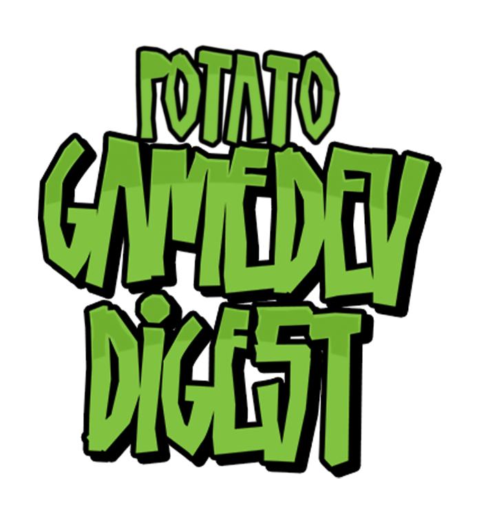
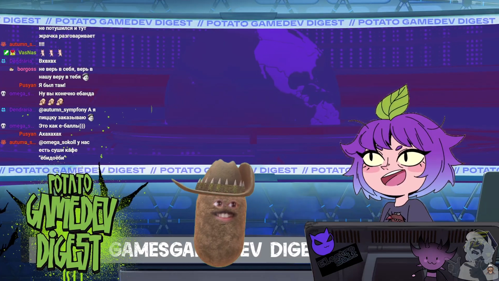
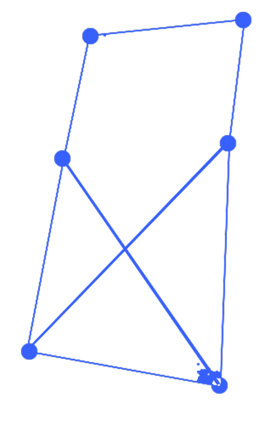
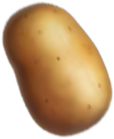
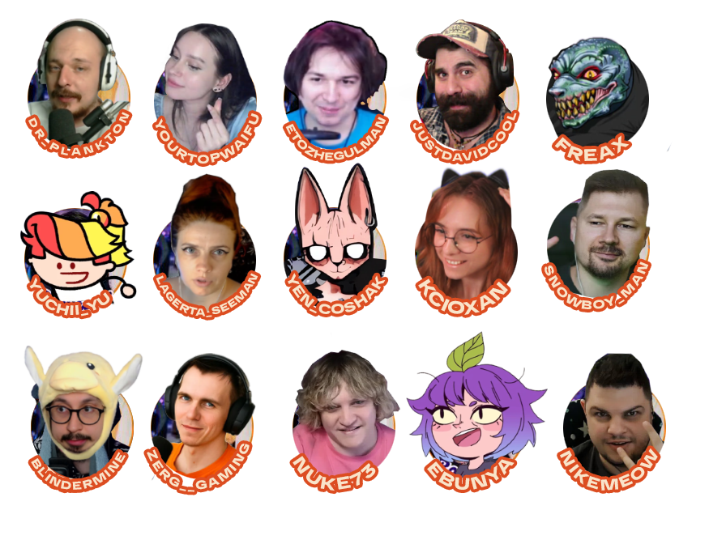

КТО НАС СМОТРИТ?
Геймеры и игровая индустрия 18–35 лет, активно следящие за новинками и трендами.

Смотреть


Подкаст Potato GameDev Digest приглашает весёлых и неформатных гостей в мир видеоигр. Ведущий обсуждает с героями индустрии, стриминга и игровой культуры новости, тренды, истории из жизни и то, что обычно остаётся за кадром.
Здесь меньше официоза, больше живого разговора, мемов, импровизации и настоящего человеческого мнения.
Геймеры и игровая индустрия 18–35 лет, активно следящие за новинками и трендами.
Гостями подкаста обычно становятся стримеры, блогеры, контент-мейкеры и люди, которых хочется слушать дольше пяти минут.
Тоже хочешь принять участие? Просто свяжись со мной — формат разговора подстроим под тебя.

На данный момент подкаст насчитывает больше 15 выпусков и продолжает расти. Идеальный регулярный формат, который можно смотреть целиком или нарезками.
Ведущий знакомит аудиторию с гостем, его профилем, проектами, достижениями и регалиями.
Ссылки на Twitch, YouTube, соцсети, проекты и другие ресурсы гостя всегда размещаются в описании.
Участие создаёт дополнительный публичный материал и помогает увеличивать узнаваемость.
Можно рассказать о релизе, проекте, событии, анонсе или другой важной новости.
Обсуждаем игры, индустрию и личный опыт без ощущения сухого интервью.
Новые контакты, идеи, коллаборации и обмен опытом с людьми из игровой тусовки.
Естественное упоминание новости об игре, девайсе или сервисе прямо в обсуждении выпуска.
Отдельная рубрика или спонсорский выпуск, посвящённый вашему продукту, игре или событию.
Логотип, бренд или рекламный визуал можно разместить прямо на ноутбуке гостя.
Розыгрыши, интеграции в соцсетях, упоминания в анонсах и Shorts — открыт к идеям.
Короткий рекламный блок в начале, середине или конце выпуска.